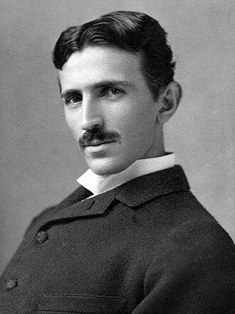

Nikola Tesla
(1856-1943)
father of modern electricity
Nikola Tesla was a brilliant inventor and engineer who changed the world with his ideas about electricity. He was born in 1856 in a small village called Smiljan, in what is now Croatia. Tesla is best known for creating the alternating current (AC) system, which is used to bring electricity to our homes and cities. He also worked on wireless communication, radio, and even dreamed of sending electricity through the air. Tesla was very creative and had many ideas, but he didn’t become rich or famous in his lifetime. Today, people remember him as a genius who made modern electricity possible.
biographies
- My Inventions: The Autobiography of Nikola Tesla (1919)
- Tesla: Man Out of Time by Margaret Cheney (1981)
- Wizard: The Life and Times of Nikola Tesla by Marc J. Seifer (1996)
- Prodigal Genius: The Life of Nikola Tesla by John J. O'Neill (1944)
- Tesla: Inventor of the Electrical Age by W. Bernard Carlson (2013)
- Nikola Tesla: A Spark of Genius by Carol Dommermuth-Costa (1994)
- The Man Who Invented the Twentieth Century by Robert Lomas (1999)
- Empires of Light by Jill Jonnes (2003)
- Tesla: Master of Lightning by Margaret Cheney and Robert Uth (1999)
- The Inventions, Researches, and Writings of Nikola Tesla by Thomas Commerford Martin (1894)